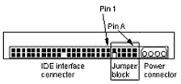
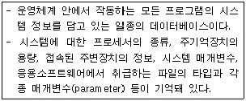
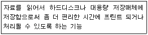
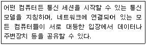
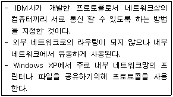

PC정비사-2급 (2009-10-18 기출문제)
1과목: PC유지보수
1. E-IDE 하드디스크에 케이블을 연결하려고 한다. 이때 연결 방향으로 올바른 것은?

- 케이블의 흰색이 있는 부분을 하드디스크의 1번 핀으로 연결한다.
- 어떻게 연결해도 상관없다.
- 케이블의 붉은 색이 있는 부분을 하드디스크의 1번 핀으로 연결한다.
- 케이블의 붉은 색이 있는 부분을 하드디스크의 1번 핀의 반대 방향으로 연결한다.
(정답률: 69%)

2. 오버 클럭킹을 하기 위해 CPU의 속도를 조정하고자 할 때, CPU의 내부 클럭 속도를 결정하는 요인으로 올바른 것은?
- 시스템 클럭, 마스터 드라이브의 속도
- 시스템 클럭, CPU 배율
- 시스템 클럭, CPU 사용 전압
- CPU 사용 전압, CPU 배율
(정답률: 73%)
3. CPU 조립과 관련된 설명으로 잘못된 것은?
- CPU 소켓은 장착할 수 있는 방향이 정해져 있다.
- CPU 열을 방출하기 위해 냉각팬을 장착한다.
- 냉각팬은 별도의 전원이 필요하지 않다.
- 소음과 성능을 높이기 위해 냉각팬 제품을 바꿀 수 있다.
(정답률: 83%)
4. PCI 방식으로 연결할 수 있는 장치가 아닌 것은?
- 메모리
- 사운드 카드
- 모뎀
- 랜 카드
(정답률: 58%)
5. 하드디스크를 설치할 때 주의할 사항으로 올바른 것은?
- 하드디스크의 용량이 클 때는 구형 바이오스에서 용량을 지원하지 않는 경우도 있다.
- 하드디스크의 데이터 케이블 연결 커넥터는 방향이 바뀌어도 상관없다.
- P-ATA 하드디스크의 전원 케이블은 별도로 연결할 필요가 없다.
- P-ATA 하드디스크의 경우, 점퍼를 이용하여 마스터와 슬레이브 드라이브를 구분할 수 없다.
(정답률: 64%)
6. Award BIOS의 CMOS 설정 메뉴 중 "STANDARD CMOS SETUP"에서 설정할 수 없는 것은?
- 컴퓨터 내부 날짜와 시간 설정
- 메모리 스피드 설정
- 하드디스크 타입 설정
- 플로피디스크 드라이브 타입 설정
(정답률: 69%)
7. BIOS 설정 항목 중 PC 전원이 들어오면 시스템 BIOS가 자동으로 시스템 상황을 점검하고 기록되어 있는 시스템의 정보와 실제 정보가 일치하는지를 검사하는 것은?
- Numeric Processor Test
- Power On Self Test
- Check Disk
- System Information
(정답률: 74%)
8. "ECP, EPP, SPP, ECP+EPP"는 Award BIOS에서 볼 수 있는 설정 값이다. 이 값을 사용하는 BIOS 설정 항목으로 올바른 것은?
- ECP DMA Select
- IDE Ultra DMA Mode
- Onboard PCI IDE Enable
- Parallel Port Mode
(정답률: 39%)
9. Windows XP 사용 중에 간혹 마우스가 움직이지 않고 시스템이 다운된 것처럼 갑자기 멈춘 다음 잠시 후 다시 작동된다. 해결 방법으로 올바른 것은?
- 파일시스템을 FAT32에서 NTFS로 변경한다.
- 마우스와 키보드 모두 USB로 사용할 경우 발생하므로 둘 중 하나를 PS/2 방식으로 교체한다.
- 메모리에 상주하는 시작프로그램과 서비스를 줄이고 불필요한 인터페이스를 제거해 리소스를 확보한다.
- 디스크 검사를 실행해 불량 섹터를 치료하거나 새로운 부트 섹터와 마스터 부트 레코드(MBR)를 만들어 해결한다.
(정답률: 58%)
10. 아날로그 비디오 신호를 받고 보낼 수 있는 그래픽 카드에 붙이는 이름은?
- MPEG
- VIVO
- DVI
- CRT
(정답률: 54%)
11. 하드디스크가 Active 상태로 설정되지 않았을 경우, 나타나는 메시지는?
- Devide overflow
- Hard disk diagnosis fail
- No ROM Basic system halted
- Error initializing hard drive controller
(정답률: 37%)
12. “Win.ini”, “System.ini” 파일에서 실행시킨 장치 드라이버나 램 상주 프로그램, Windows의 시작 프로그램에 문제가 있는지 점검하기 위해 시스템 구성 유틸리티를 실행하는 명령어는?
- Autoexec.bat
- Config.sys
- Msconfig.exe
- Ipconfig.exe
(정답률: 66%)
13. Windows XP가 작동되는 구성 값과 설정, 프로그램과 관련된 모든 정보가 저장 되어 있어 Windows XP 부팅 과정부터 로그인, 응용프로그램 구동에 이르기까지 Windows XP 운영체계에서 핵심적인 역할을 담당하고 있는 것은?
- cache memory
- flash ROM
- registry
- Windows Kernel
(정답률: 75%)
14. 하드디스크 용량이 부족하여 새로운 E-IDE 하드디스크를 하나 더 구입하여 설치하였으나, BIOS에서 인식이 되지 않을 때 점검해야 할 사항으로 잘못된 것은?
- Cable들이 바르게 연결 되어 있는지 점검한다.
- Master/Slave 점퍼가 제대로 되어 있는지 점검한다.
- CMOS Setup에서 하드디스크 설정을 확인한다.
- Partition이 잘 되어 있는지 점검한다.
(정답률: 68%)
15. 사용하던 PC가 부팅되는 시간이나 Windows의 체감 속도, 프로그램 실행 속도 등 전체적으로 속도가 저하되었다. 그 원인에 대한 설명으로 잘못된 것은?
- Windows의 레지스트리 정보가 많아졌다.
- 특정 프로그램의 실행 속도나 Windows의 부팅 속도는 하드디스크의 단편화가 그 원인이 되기도 한다.
- Windows를 오래 사용하다 보면 각종 DRV, INI 파일 등이 Windows 폴더에 쌓이게 되며, 이러한 정보로 인하여 Windows 속도가 느려지기도 한다.
- DNS 서버의 지정이 잘못되거나 서버에 오류가 발생한 경우이다.
(정답률: 67%)
2과목: PC운영체제
16. 운영체제 처리 방식 중 데이터가 발생하는 즉시 컴퓨터에서 처리가 이루어지는 시스템으로 은행의 온라인, 기차좌석 예약 등에 대표적으로 사용되는 방식은?
- 일괄처리 방식
- 다중 프로그래밍 방식
- 실시간 방식
- 시분할 방식
(정답률: 74%)
17. Bench Mark Test를 올바르게 정의한 것은?
- Virus에 감염되기 쉬운 정도를 구분하기 위한 보안 점검으로 A, B, C, D 네 등급으로 나뉜다.
- 하드웨어나 소프트웨어의 개발 단계에서 상용화하기 전에 실시하는 제품 검사 작업으로, 선발된 잠재 고객으로 하여금 일정 기간 무료로 사용하게 한 후에 나타난 여러 가지 오류를 수정, 보완한다.
- 비교 대상을 두고 하드웨어나 소프트웨어의 성능을 비교 시험하고 평가하는 것을 말한다.
- System의 각 장치의 Error 발생 여부를 확인하는 것으로 시스템의 개발 초기 단계에서 이루어진다.
(정답률: 64%)
18. Windows XP에서 자주 사용되는 단축키에 대한 설명으로 잘못된 것은?
- Shift+Delete : 선택한 항목을 휴지통에 넣지 않고 영원히 삭제
- Alt+Enter : 선택된 개체의 속성을 표시
- Ctrl+F4 : 선택한 항목의 등록정보 오픈
- Windows + F : 검색창
(정답률: 65%)
19. Windows XP에서 DirectX에 대한 설명 중 잘못된 것은?
- DirectX를 통해 디스플레이와 오디오 카드의 기능에 액세스함으로써 현실감 넘치는 3차원 그래픽과 풍부한 음악 및 오디오 효과를 내는 프로그램을 사용할 수 있다.
- DirectX는 Windows 프로그램에 고성능 하드웨어 가속 멀티미디어 지원을 제공하는 낮은 수준의 응용 프로그래밍 인터페이스(APl) 집합이다.
- DirectX의 다이렉트 input은 조이스틱, 마우스등 게임에 필요한 보조 장치를 제어하고, 다이렉트 플레이는 멀티 플레이, 모뎀 플레이등을 통일된 규격 상태로 즐길 수 있게 해준다.
- DirectX에는 2차원 도형을 지원하는 API는 포함되어 있지 않다.
(정답률: 69%)
20. Windows XP를 설치하는 방법으로 잘못된 것은?
- 설치할 하드디스크가 포맷이 되어있지 않을 경우 Windows XP 설치 중에는 포맷을 할 수 없으므로 설치 전 FDISK를 이용하여 포맷한다.
- 하드디스크에 Windows 98/Me 등의 Windows가 이미 설치되어 있다면 Windows에서 바로 업그레이드 할 수 있다.
- 하드디스크에 Windows가 설치되어 있지 않다면 Windows XP 설치 CD로 부팅한 뒤 설치해야 한다.
- Windows에서 설치할 때 만약 설치 프로그램이 자동으로 실행되지 않으면 탐색기를 실행해 CD-ROM 드라이브를 열어 “Setup.exe”를 더블 클릭한다.
(정답률: 59%)
21. 일반 사용자 그룹으로 로그온한 후 명령 프롬프트에서 시스템 관리자로 프로그램을 실행하기 위해 필요한 명령어는?
- Defrag
- Runas
- Guest
- Administrator
(정답률: 48%)
22. "장치 관리자"를 통해서 할 수 있는 작업이 아닌 것은?
- 장치의 이상 유무 판단
- 장치 드라이버 업데이트
- 장치의 리소스 확인
- 드라이버의 드라이버 서명 확인 여부
(정답률: 74%)
23. [시작] - [설정] - [제어판] - [프로그램 추가/제거] 에서 프로그램 제거를 했음에도 남아 있는 프로그램 이름(ICQA)이 있다. 이 이름을 제거하려면 레지스트리내의 어느 항목을 제거해야 하는가?
- HKEY_LOCAL_MACHINE\Software\Microsoft\ Windows\CurrentVersion\Uninstall\ICQA
- HKEY_USERS\Software\Microsoft\Windows\ CurrentVersion\Installed\ICQA
- HKEY_CURRENT_USER\Software\Microsoft\ Windows\CurrentVersion\Installed\ICQA
- HKEY_CURRENT_CONFIG\Software\Microsoft\ Windows\CurrentVersion\Uninstall\ICQA
(정답률: 63%)
24. Windows XP의 제어판에서 네트워크를 설정할 때 설치 가능한 구성 요소의 유형이 아닌 것은?
- 클라이언트
- 서비스
- 프로토콜
- 서버
(정답률: 67%)
25. Microsoft Outlook Express에서는 여러 가지 방법으로 전자 메일 주소와 다른 연락처 정보를 주소록에 추가할 수 있다. 주소록 추가방법으로 잘못된 것은?
- 기존 그룹에는 연락처를 추가할 수 없다.
- 다른 프로그램에서 주소록을 가져온다.
- 메일 메시지에서 직접 이름을 추가한다.
- 전자 메일로 받은 명함(vCard)을 가져온다.
(정답률: 77%)
26. Windows XP에서 다음에 설명하는 것이 뜻하는 것은?

- Driver
- MS-SQL
- Registry
- System.inf
(정답률: 72%)
27. Windows XP에서 기본적으로 제공하는 파일 및 설정 전송 마법사에 대한 설명으로 가장 올바른 것은?
- 컴퓨터의 모든 데이터를 백업하여 컴퓨터가 이상 있을 시 모든 데이터를 다시 복원한다.
- 사용자가 이전에 사용하던 자료와 설정을 새로운 컴퓨터로 옮길 때 번거롭게 다시 설정하거나 일일이 파일을 옮겨야 할 때 사용한다.
- 일정한 복원 시점을 두고 자동으로 백업을 하여 시스템에 문제가 생겼을 경우 이전 문제가 없는 시점으로 복원한다.
- 네트워크상에 파일을 공유하여 사용할 때 특정 파일이나 폴더를 선택하여 공유할 수 있다.
(정답률: 50%)
28. Windows XP의 레지스트리 구조에서 사용자가 설정한 Windows 환경에 대한 정보가 저장되어 있는 곳은?
- HKEY_CLASSES_ROOT
- HKEY_CURRENT_USER
- HKEY_LOCAL_MACHINE
- HKEY_USERS
(정답률: 60%)
29. Windows XP에서 장치 관리자에 관한 설명 중 거리가 먼 것은?
- 장치 관리자는 특정 제품의 등록정보를 통해 장치의 정상동작을 확인할 수 있다.
- 드라이버 탭에서는 해당 장치를 구동하기 위하여 설치된 드라이버의 설치경로와 파일명을 확인할 수 있다.
- 드라이버 롤백은 설치된 드라이버를 삭제하는데 유용하다.
- 장치가 사용하는 IRQ등의 정보를 확인할 수 있다.
(정답률: 64%)
30. 웹브라우저가 기본적으로 이해하는 정보의 형태를 제외한 동영상이나 소리 등을 듣기 위해 별도로 설치하는 프로그램은?
- CGI 프로그램
- 자바 프로그램
- 플러그인 프로그램
- 쿠키 프로그램
(정답률: 65%)
3과목: PC주변기기
31. 다음에서 설명하고 있는 프린터 관련 용어는?

- Swap
- Spool
- DMA
- Overplay
(정답률: 62%)
32. 컴퓨터와 주변기기와의 통신 방식 중 시리얼(Serial) 방식이 아닌 것은?
- USB
- IEEE1394
- RS232C
- PCI BUS
(정답률: 52%)
33. 주기억장치보다 큰 프로그램을 실행하기 위해 보조기억장치(하드디스크)의 일부를 주기억장치처럼 사용하는 기법을 무엇이라 하는가?
- 버퍼(Buffer) 메모리
- 연관(Associative) 메모리
- 캐시(Cache) 메모리
- 가상(Virtual) 메모리
(정답률: 68%)
34. 일반적으로 외장형 하드디스크를 연결하는데 사용되지 않는 인터페이스는?
- SATA
- IEEE1394
- E-IDE
- USB
(정답률: 58%)
35. CD-ROM에 대한 설명 중 잘못된 것은?
- CD-ROM은 많은 양의 자료를 저장할 수 있는 콤팩트디스크이다.
- CD-ROM의 표준인 ISO 9660 등이 있다.
- CD-ROM은 컴퓨터와 연결하는 인터페이스 방식에 따라 SCSI , E-IDE, S-ATA 등의 방식으로 나눌 수 있다.
- CD-ROM의 레이저 파장은 635~650(nm) 사이이다.
(정답률: 48%)
36. HDD와 관련된 내용 중 잘못된 것은?
- 클러스터는 하드디스크 위에 파일을 저장하는 논리적 단위이다.
- 실린더란, 하드디스크를 구성하고 있는 모든 원판 상에 위치하고 있는 단일 트랙 위치를 말한다.
- 파일이 기록된 위치에 관한 정보를 기록해 두는 것이 FAT이다.
- PIO 모드는 CPU에 부하를 주지 않고 직접 주변 장치에서 데이터를 읽고 쓸 수 있는 기술이다.
(정답률: 43%)
37. 입력 장치의 범주에 속하지 않는 것은?
- 조이스틱
- 플로터
- 마우스
- 디지타이저
(정답률: 78%)
38. 현재 PC에서 사용하는 메모리 용량 중 바이트(Byte)에 대한 설명으로 올바른 것은?
- 1byte는 8bit이며, 알파벳 한 글자를 표현할 수 있다.
- 1byte는 32bit이며, 알파벳 한 단어를 표현할 수 있다.
- 1byte는 16bit이며, 한글 한 단어를 표현할 수 있다.
- 1byte는 4bit이며, 한글 한 글자를 표현할 수 있다.
(정답률: 76%)
39. 모든 컴퓨터는 네트워크상에서 자신을 구분하기 위한 유일한 주소를 가지고 있다. 네트워크 인터페이스 카드(NIC) 제조 시에 부여된 48bit 물리적 주소는?
- TCP 주소
- IP 주소
- MAC 주소
- LAN 주소
(정답률: 66%)
40. DVD Video에서 사용되는 영상데이터 압축 표준은?
- AVI
- MPEG-1
- MPEG-2
- AC'97
(정답률: 66%)
41. SCSI 규격은 여러 가지 종류로 변화/발전하였다. 다음 중 SCSI의 규격과 최고 속도가 잘못 연결된 것은?
- SCSI-Ⅱ : 10 MB/S
- SCSI-Ⅰ : 5 MB/S
- Ultra-3 SCSI : 160MB/S
- Ultra-2 SCSI : 100 MB/S
(정답률: 54%)
42. 키보드의 인터페이스가 아닌 것은?
- LPM
- AT
- PS/2
- USB
(정답률: 63%)
43. 하드디스크를 구성하고 있는 물리적 요소가 아닌 것은?
- FAT
- Head
- Spindle Motor
- Platter
(정답률: 69%)
44. 뮤직 신디사이저, 악기, 컴퓨터 등을 상호 접속이 가능하도록 하는 인터페이스 규격은?
- MPEG
- MPC
- BUS
- MIDI
(정답률: 77%)
45. 미국의 애플 컴퓨터가 제창한 시리얼 인터페이스 규격으로PC 주변장치와의 인터페이스 중 고속을 요하는 HDTV, 디지털 캠코더 영상장비 등을 연결하는데 사용하는 인터페이스는?
- EIDE
- IEEE 1394
- SCSI
- USB
(정답률: 61%)
4과목: PC네트워크
46. 다음에 설명하는 네트워크 모델은?

- 클라이언트/서버 모델
- 마스터/슬레이브 모델
- Peer to Peer 모델
- N2N 모델
(정답률: 68%)
47. TCP/IP를 설정할 때 DNS 서버를 설정하게 된다. DNS 서버를 지정하여 사용하는 이유로 올바른 것은?
- 통신 메시지를 처음으로 전달하는 네트워크 장치를 지정하기 위해
- 숫자로 구성된 IP 주소 대신, 문자로 구성된 인터넷 주소를 사용하기 위해
- 외부의 불법 침입에 대비하여 내부 자료를 보호하기 위해
- Windows를 사용하는 네트워크에서 이름으로 컴퓨터를 확인/검색하기 위해
(정답률: 64%)
48. TCP/IP 프로토콜의 하나로 호스트끼리 Mail을 전송하는데 직접적으로 관여하는 프로토콜은?
- SMTP
- UDP
- TFTP
- ICMP
(정답률: 73%)
49. 다음이 설명하는 통신 프로토콜은?

- NetBIOS
- IPX/SPX
- TCP/IP
- SNMP
(정답률: 62%)
50. 표준 네트워크 구조를 위한 개방형 시스템 간의 상호 접속 규정을 정의한 통신 규약으로, 현재 다른 모든 통신 규약의 지침이 되고 있는 것은?
- TCP/IP
- IPX/SPX
- OSI 7 Layer
- RNC
(정답률: 62%)